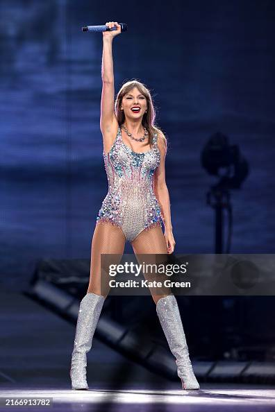

Redefining the Music Industry's Future, One Re-Recording at a Time
An Analysis Of Taylor Swift's Re-recording of 1989
By Ally Goelz
What is Taylor's Version?

Taylor Swift is the 21st-century “Pop Princess.” With music that remains mainstream, she’s dominated the Grammys and the Billboard Top 100 chart for the past decade. Even with genre switches from country to pop to alternative, thirty-four-year-old Swift has captured the hearts and ears of listeners worldwide.
This fame didn’t stem from just luck. Sure, Swift has seen chart-topping hits and sold-out stadiums before. But, Swift’s recent choice to re-record her first six albums took her career to a new level. Alongside her re-recording releases, she conducted her “Eras Tour.” Over 149 shows
worldwide, she’s sold out stadiums, pulled in new fans, and created traditions. So far, Swift has rerecorded four of the six albums, raking in around $8.5 million a month in royalties from just these. According to The New York Times, the Eras Tour is the highest-grossing tour of all time, with over $2 billion in revenue.
Monthly Income From Stream Royalties of Each Swift Re-Recording
Fearless (Taylor's Version): est. $758,430
Red (Taylor's Version): est. $1,405,618
Speak Now (Taylor's Version): est. $6,393,140
1989 (Taylor's Version): monthly income is still TBD.
While Taylor Swift isn’t the first artist to rerecord older works, her approach has curated unique attention. Artists like David Bowie, Frank Sinatra, and Bob Dylan, have previously re-recorded albums. Still, music professionals see Swift’s strategy as transformative for record labels and music listeners, making her re-recordings appear revolutionary, but with potential implications.
After listening to the rerecorded tracks, fans realized some songs aren’t an exact rerecording of the original. From lyrical changes to production differences, songs aren’t the same as the version fans grew up with. A columnist from The Signal wrote that 1989 (Taylor’s Version) “fails to replicate the magic of the original with technical mishaps and subpar performances that make the listener wonder what happened in the studio when attempting to remake these classic songs.”
Two big questions loom: Are Taylor’s Version albums a true re-record? What implications can occur from the re-recordings?
But, one things for certain. The music industry will never be the same.
The Process
Craig Thatcher, a singer-songwriter from Pennsylvania, has his thoughts on Swift’s decision to re-record her music.
Thatcher started his career in 1966, after early influences from the Beatles and the Rolling Stones. Now, as the band leader for “The Craig Thatcher Band,” an ambassador for C.F. Martin & Co Guitars, and the host of CBS’s “Behind The Guitar,” he knows the ins and outs of the music industry—more specifically, why artists choose to do what they do.
“Most artists want to insert their own updated "flavor" or "personality" and perhaps wisdom, learned over time when rerecording their songs. Sometimes new chord progressions, while maintaining the original lyrics, can be effective,” Thatcher said.
When artists have the opportunity to retain their creative and economic control over their music, they’ll do everything in their power to do so. Thatcher recalls popular ’60s bands relinquishing control and publishing mainly due to wanting to hear themselves on the radio and watch their records climb the charts. He said publishing took on a new meaning - “it wasn’t just about printing piano music so people could play their favorite songs at home.”
Thatcher said maintaining creative control is essential to being an artist; no matter the medium. Yet, Swift still finds her re-recording process being critiqued. Many critics view her re-recordings as strategic business rather than artistic. Thatcher believes the two coexisted, but had more of a business influence.
“In Taylor Swift's case, it was definitely a strategic business move,” Thatcher said, “She wanted to own her recordings and maintain control of her songs which as I understand, she may not have been able to do under previous circumstances.”
The re-recorded songs have a lower acoustic value than the original on Swift’s 1989. The change could be due to new production technologies, according to Thatcher. He also noted that artists can grow out of their old vocal range, or lyrics can become dated, as they age. These are just a few variables that can cause differences in the recordings.
“Melody can be adapted to fit the new progression. This then gives a whole new life to an old song. Possibly some lyric changes work as well, reflecting where the artist is now as opposed to where they were when the song was first written.” Thatcher said.
Future Implications
Other music professionals have their own opinions on Swift’s decision to re-record. From a business and legal perspective, Swift has changed the discography of music, forcing change to occur in more ways than none.
Major record label companies are now overhauling recording contracts for new artists, to ensure they maintain exclusivity with them to deter competition with the label in the future, according to Cecilia Giles.
In Giles’s journal, she also discovered that labels are stipulating artists must wait anywhere from ten to thirty years after release to legally re-record. Entertainment attorney, Gandhar Savur, reported that he signed a deal with “a very big indie [artist] that had a 30-year re-record restriction,” according to Giles.
Joe Poindexter, professor at the Thorton School of Music , said this new and unprecedented contract change is mainly due to the increase in streaming music and the decrease in physical music copies.
“It’s just I think it’s important, too, that we realize, this issue of re-record is because of the world of streaming. This would have never been an issue if we didn’t have the ability to get whatever we want, whenever we want it. And we have that ability now with streaming. This wouldn’t have been the case if we were talking about physical product in stores,” said Poindexter.
Streaming has caused Swift’s success to flourish. 1989 (Taylor’s Version), her latest re-recording, outsold its original counterpart within the first week of its release, according to Giles. Additionally, 1989’s streams are still outperforming her original album. The only songs on 1989 that are out-streaming 1989 (Taylor’s Version) are her radio singles, “Style”, “Blank Space”, “Shake it Off” and “Bad Blood”.
Looking Ahead
Taylor Swift's Taylor's Version represents more than just a musical endeavor— it’s a pivotal moment in the music industry that challenges the power between an artist and their record label. Not only did she reclaim her music, Swift set a precedent, reshaping how music ownership and artist rights are understood.
While critics can continue the artistic merit debate of the re-recordings, the fact is commercial and strategic success is undeniable. Swift’s journey secured her artistic legacy and paved the way for future artists to do the same.
Taylor’s Version is a testament to the right to own what you create and write your own story - both lyrically and metaphorically.
“One thing we all know is that she has certainly been super successful and I think it's great to see a young artist take such control of their destiny, not just financially but her artistic legacy,” Thatcher said.
.jpg)